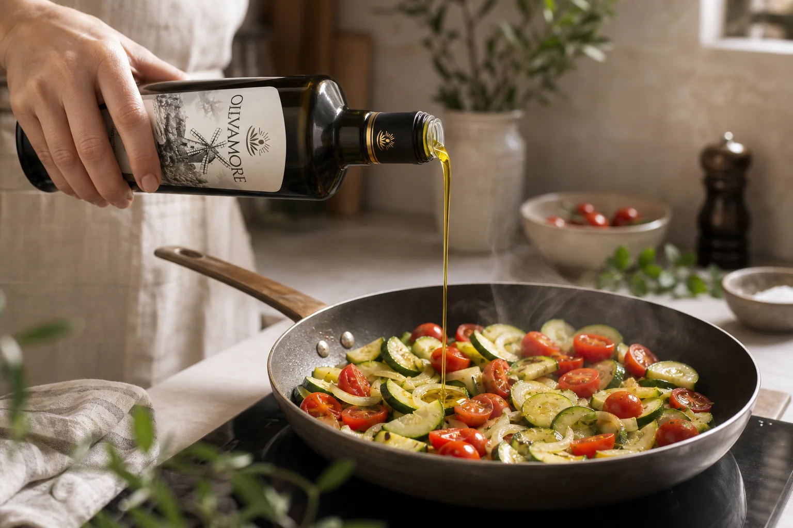
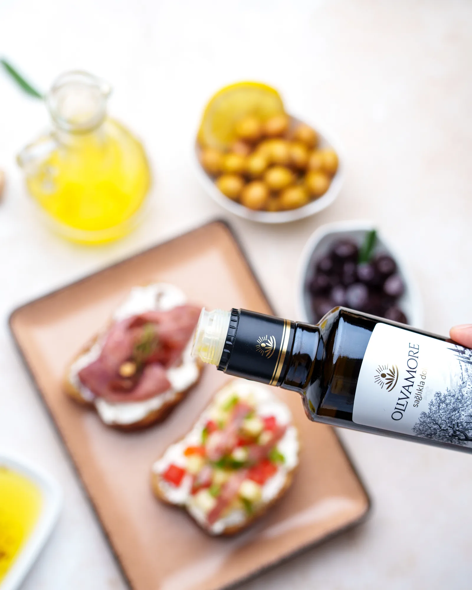
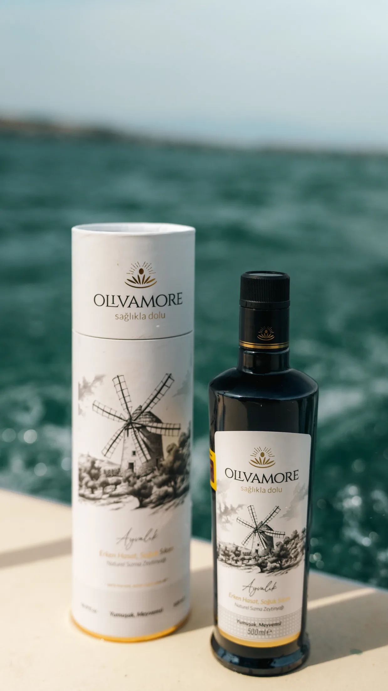
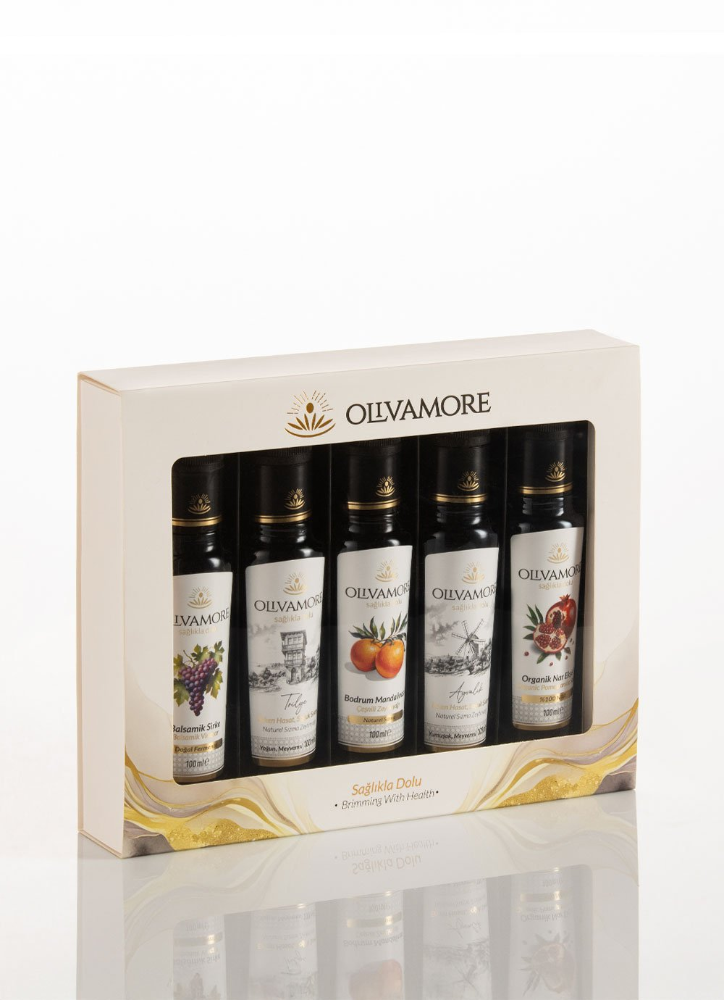
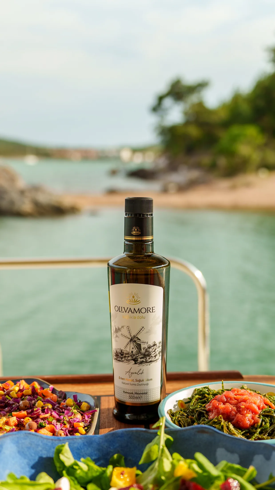
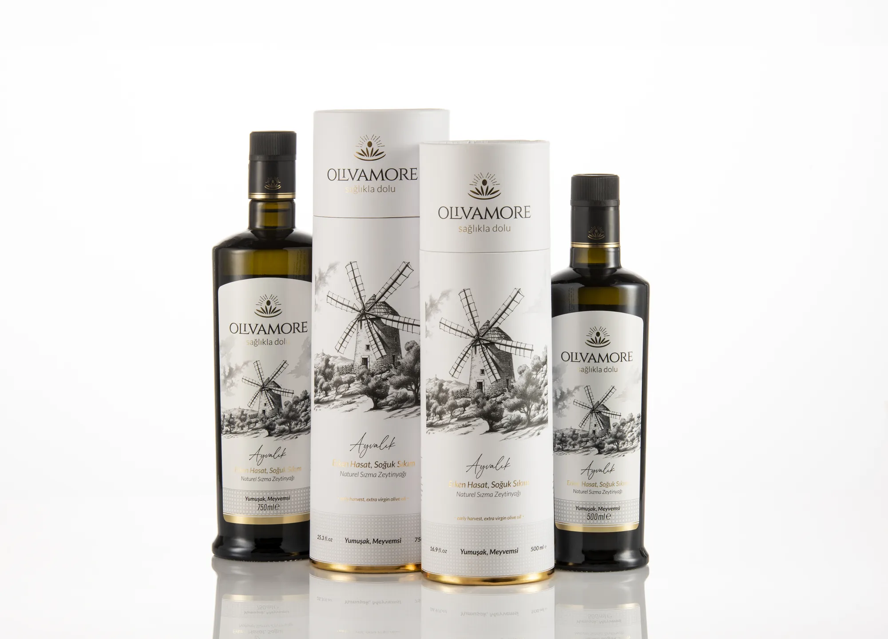

Bitir
Bitirme · Dengeli
Ayvalık Erken Hasat
₺850 / 500 mlDomates–beyaz peynir salatasına, humusa ve kahvaltı tabağına serviste.
Ürünü çeşidine göre değil, mutfaktaki işine göre seç.

01Tencere, tava ve fırın için günlük mutfak yağları.
Pişirme yağlarını gör →
02Balık, kahvaltı, salata ve mezeye son dokunuş.
Bitirme yağlarını gör →
03Açmaya değer kutular, sofrada karşılığı olan ürünler.
Hediye setlerini gör →Kararsız mısın? Damak Pusulası'nı çöz; sana en yakın profili bulalım.
Domates–beyaz peynir salatasına, humusa ve kahvaltı tabağına serviste.

Fırından çıkan levreğe, köz patlıcana ve humusa son dokunuşta.

Nohut, türlü, taze fasulye ve fırın sebzede tencerenin başından itibaren.
Ayvalık, Trilye ve seçili bir çeşnili yağı tek keşif kutusunda karşılaştır; sonra sofrana en uygun büyük boyu seç.


Süreci gösteriye dönüştürmeden, her adımın ürüne ne kattığını açıkça anlatıyoruz.
Toprak, rüzgâr ve farklı zeytin çeşitleri kendi dengesini kurar.
Her yılın koşullarını okuyup doğru olgunlukta toplarız.
Zeytinleri bekletmeden, aynı gün ve düşük sıcaklıkta işleriz.
Her hasadı ayrı değerlendirir, çeşidin karakterini koruruz.
Kökeni, tarihi ve mevcut analizleri parti bilgisiyle paylaşırız.
Hasat tarihi, çeşit, üretim yeri ve mevcut analizler; pazarlama cümlesi olarak değil, parti bilgisi olarak bir arada.

Olivamore, Ayvalık'ta bir zeytinlik kurma hayaliyle ve aynı bahçedeki farklı çeşitlerin birbirini nasıl tamamladığını keşfetmemizle doğdu.
Her hasadı kendi koşulları içinde değerlendiriyor; her çeşidin karakterini korurken sofrada dengeli, anlaşılır ve keyifle kullanılabilecek yağlar arıyoruz.
Hikâyenin tamamıSevdiğin tatlardan ve sofrada nasıl kullandığından yola çıkalım; sana özel ilk önerimizi ve keşfedebileceğin iki alternatifi anlatalım.
Pusulayı Başlat
Hazır seçkilerden birini seç veya şişeleri kendin bir araya getir. Kutu, ürünün önüne geçmez; hikâyesini tamamlar.
Ürün, yıl ve derece bilgilerini sertifika görselleri ve resmî sonuç bağlantılarıyla birlikte yayınlıyoruz.
Analizleri ve belgeleri gör